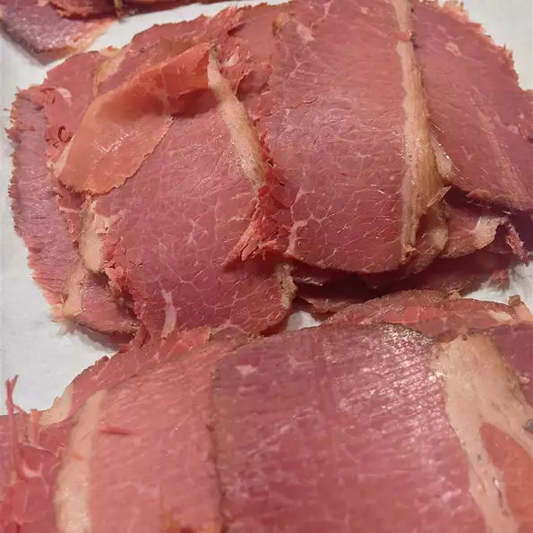

Jan's Beer-Brined Corned Beef

Description
Homemade corned beef is brined, smoked, then braised to perfection. Juicy, tender and full of flavor with just a few steps. It is easier than you think!
Makes delicious Reuben sandwiches! Divide slices into half-pound portions and freeze, leaving only what you will use over the next few days unfrozen.
Ingredients
Brine:
- 3 quarts cold water
- 3 (12 fluid ounce) bottles lager beer
- 2 onions, cut into wide slices
- 1 ½ cups kosher salt
- ½ cup dark brown sugar
- 5 tablespoons curing salt
- ¼ cup pickling spice
- 2 tablespoons chopped garlic
- 1 (5 pound) beef brisket, fat trimmed to a thin layer
- wood chips
- 2 cups apple juice, or as needed
Braising Liquid:
- 1 (12 fluid ounce) bottle lager beer
- 1 onion, cut into large slices
- 2 tablespoons dark brown sugar
- 2 tablespoons pickling spice
- 2 tablespoons chopped garlic
- 1 teaspoon ground black pepper
Steps
-
Place water, 3 bottles beer, 2 onions, kosher salt, 1/2 cup brown sugar, curing salt, 1/4 cup pickling spice, and 2 tablespoons garlic in a very large pot. Stir well until salts are dissolved. Add beef; stir gently. Use a large bowl or heavy plate to keep the beef submerged. Cover with plastic wrap and refrigerate, stirring once a day, for 4 days.
-
Soak wood chips in apple juice for 2 hours.
-
Remove beef from pot, discarding brine, and rinse well until cold water. Let beef come to room temperature.
-
Preheat an outdoor grill to 150 to 175 degrees F (65 to 80 degrees C). Place soaked wood chips in a shallow aluminum pan on the heat source.
-
Place meat directly on the grate and allow to smoke for 2 hours
- Combine 1 beer, 1 onion, 2 tablespoons brown sugar, 2 tablespoons pickling spice, 2 tablespoons chopped garlic, and black pepper in a large saucepan; bring to a boil. Remove from heat and pour into a large roasting pan. Place beef in braising liquid in the roasting pan and cover tightly with aluminum foil.
- Increase grill temperature to 250 degrees F (120 degrees C). Place the roasting pan on the grill and close the lid.
- Roast the beef until tender, 3 to 4 hours. An instant-read thermometer inserted into the center should read at least 145 degrees F (60 degrees C).
- Remove beef from the roasting pan, discarding braising liquid. Let beef cool until easily handled.
- Slice beef into very thin slices across the grain.
Cook's Notes:
Substitute apple juice for the beer if preferred.
Use 2 smaller briskets instead of 1 large if desired. Use 1 tablespoon curing salt per pound of beef.
You may finish cooking the beef in the oven instead of on the grill in step 7.
back to home page
go to top